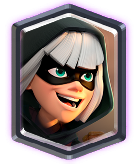

The Bandit card is unlocked from the Jungle Arena (Arena 9) or a Legendary Chest. She is a troop with moderate hitpoints and damage that has the ability to dash to nearby targets, dealing double damage if she hits a target with her dash, similar to a Prince's charge. She is immune to damage while dashing. A Bandit card costs 3 Elixir to deploy. She has white hair, wears a mask, and wields a blackjack.
